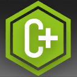

先锋 Vanguard
“在波涛中插下顽石，分割巨浪，破开迷雾。”
�D�D钝爪-突破
先锋是一种在前期非常重要的战斗职业。先锋干员通常具有击杀敌人或通过技能回复部署费用的能力，这使得他们在战斗初期有着非凡的意义，可以帮助指挥官顶住前线压力并快速铺开战线。
敏捷果断的先锋都是大多是游走在前线的战士，在战阵中凭借自己的机动性进行快速突袭和牵制。而另一些先锋则更加机智，擅长利用策略、环境和战术优势来击败敌人。
“面对魂灵昭示的诸多谜题，先锋们身先士卒突入其中。”――论断：先锋
先锋核心特质Core Vanguard Traits
作为一名先锋，你具有以下职业核心特质：
主属性Primary Ability。力量或敏捷
生命值骰Hit Point Die。每先锋等级D8
豁免熟练Saving Throw Proficiencies。敏捷与感知
技能熟练Skill Proficiencies。选择2项：特技、隐匿、调查、历史、驯兽、医药、求生、察觉、洞悉、欺瞒、游说。
武器熟练Weapon Proficiencies。简易武器、军用近战武器
工具熟练Tool Proficiencies。 盗贼工具
护甲受训Armor Training。轻甲、中甲
起始装备Starting Equipment。 你获得150GP，可以用来购买初始装备或作为起始财产。
成为一名先锋Becoming a Vanguard
作为1级角色As a Level 1 Character
获得先锋核心特质表里的全部能力。
获得先锋的1级特性（见先锋特性表 ）
作为兼职角色As a Multiclass Character
获得先锋核心特质表里的以下能力：
生命骰、军用近战武器熟练和轻甲、中甲的护甲受训。
获得先锋的1级特性（见先锋特性表 ）。
先锋特性表
| 等级 | 熟练加值 | 费用骰 | 职业特性 |
|---|---|---|---|
| 1st | +2 | ― | 开路先锋，突入战局，战斗风格 |
| 2nd | +2 | d4 | 部署策略，战技，回转 |
| 3rd | +2 | d4 | 先锋子职 |
| 4th | +2 | d4 | 属性值提升 |
| 5th | +3 | d4 | 额外攻击，战场适应 |
| 6th | +3 | d6 | 子职特性 |
| 7th | +3 | d6 | 开路先锋，前线汹涌 |
| 8th | +3 | d6 | 属性值提升 |
| 9th | +4 | d6 | 预先准备，先锋回转（2） |
| 10th | +4 | d6 | 子职特性 |
| 11th | +4 | d8 | 突破本能 |
| 12th | +4 | d8 | 属性值提升 |
| 13th | +5 | d8 | 开路先锋 |
| 14th | +5 | d8 | 先进部署 |
| 15th | +5 | d8 | 子职特性 |
| 16th | +5 | d10 | 属性值提升 |
| 17th | +6 | d10 | 先锋回转（3） |
| 18th | +6 | d10 | 子职特性 |
| 19th | +6 | d10 | 传奇恩惠 |
| 20th | +6 | d10 | 陷阵旌旗 |
| 先锋子职表 | 序号 |
|---|---|
| 先锋职业分支 Vanguard Subclasses | |
| 冲锋手 Charger | 1 |
| 尖兵 Pioneer | 2 |
| 情报官 Agent | 3 |
| 战术家 Tactician | 4 |
| 执旗手 Standard Bearer | 5 |
先锋职业特性 Vanguard Traits
1级：突入战局 Jump into the Fray
你总是在所有人有所行动之前切入战局，为队友的部署争取有利机会。
若你未被突袭，你进行的先攻检定具有优势。
你习得起源专长：警戒 Alert。如果已有则改为习得一项其他符合条件的起源专长。
1级：战斗风格 Fighting Style
你习得一项你选择的战斗风格专长（见专长章节），推荐选择：巨武器战斗（冲锋手），对决/防御（尖兵），投掷武器战斗（情报官），箭术（战术家），拦截（执旗手）。
1级：开路先锋 Trailblazer
你懂得如何应对陌生的战场环境，为队友扫除障碍，你从以下增益中选择两项获得。当你的先锋等级达到7级以及13级时，你可以分别再习得一项，但不能习得已经习得的特性。
技能专精。选择一项你熟练但不具备专精的技能，你获得其专精。
额外熟练。选择一项你不具备熟练的技能或工具，你获得其熟练。
武器精通。选择一项你熟练的武器，你获得其精通。每当你完成一次长休，你能将所选的武器种类替换为你熟练的另一种武器。
语言熟习。你习得盗贼黑话或一种自选语言。
地形适应。你获得等同你步行速度一半的游泳和攀爬速度。
2级：部署策略 Deploy Strategy
作为先锋，你可以通过发动先锋战技来获得费用骰。
进战重置。费用骰会在战斗结束时，以及你进行先攻检定时清空。
费用骰成长。你的费用骰骰最初时为d4，但大小会随着你等级成长。你的费用骰会在你先锋等级达到6级（d6），11级（d8），16级（d10）时增大一级。当你需要消耗费用骰时，可以改为消耗一个拥有费用骰的自愿盟友的费用骰。
部署策略。当你结束自己回合时，你可以消耗并掷出一枚费用骰，将结果相加，并应用下述的一项部署策略。
- 攻击：指定一名可见盟友。目标可以采取反应，立即发动一次武器攻击或施展一个动作戏法。若命中或造成伤害，则使得那次伤害掷骰获得等同费用骰掷骰结果的加值。
- 加速：指定一名可见盟友。目标可以采取反应，立即移动至多等同自身移动速度一半的距离而不引发借机攻击。如果目标本轮尚未执行过回合，其先攻值提高等同费用骰掷骰结果，但不能因此高于你的先攻值；若提高后与你先攻值相同，则它在你之后行动。
- 协助：指定一名可见盟友。目标直到你下回合开始前，进行的首次D20检定具有优势。并且其立即获得等同费用骰掷骰结果的临时生命值。
2级：战技 Battleskill
你习得一种名为战技的特殊能力，可以用技力（SP）来发动。
战技Battleskill。你可以消耗技力以及所描述的动作或其他资源来发动战技。5级起，每当你获得先锋等级时，给你从先锋职业中习得的战技，添加、替换或移除一项战技特效（见第二章“战技”），前提是战技的技力消耗必须小于你的熟练加值。
技力Skill Point。你拥有上限等同你熟练加值的技力点，可以用来发动战技。你在完成一次长休后恢复所有已消耗的技力点，并在完成一次短休后恢复1点技力点。若你进行了兼职，则此熟练加值只考虑那些有战技特性的职业的等级。
限制Limitation。在战技持续期间你不能发动其他战技，你也不能同时发动两个立即战技。最后，一个战技在一回合中只能被发动一次。
作为先锋，你在第2级时习得基础战技：冲锋号令。
|
 |
冲锋号令丨Order of Charge附赠动作 消耗 1 技力
|
 立即
立即你可以附赠动作并消耗1点技力来发动这个战技。此战技每消耗1点技力，你就获得1枚费用骰。
2级：回转 Recovery
你可以使用附赠动作为自己恢复1点已消耗技力。同时你还可以指定周围60尺内一个能听到你声音的盟友，对方恢复1点技力或者恢复等同你先锋等级的生命值，每个盟友每次长休间只能以此受益一次。以此恢复技力点后，你必须进行一次先攻检定才能再次使用此特性。
你在提升到更高的先锋等级时，可以以此恢复更多技力。9级起，你可以以此恢复2点技力而非1点。第17级起，你可以以此恢复3点技力。
3级：先锋子职 Vanguard Subclass
你选择获得一项先锋职业子职：冲锋手、尖兵、战术家、情报官或执旗手。子职业的内容见本章的其他子章节。子职是一种特化能力，会在特定的先锋等级给予你对应的独特能力。此后你将在达到对应的先锋等级时，依次获得你所选的子职的能力。先锋特性表列出了你从子职中获得新特性的先锋等级。
5级：额外攻击 Extra Attack
你在自己回合内执行攻击动作时，可以发动两次攻击而非一次。
5级：战场适应 Battlefield Adaptation
你能够快速适应战场环境，利用地形和环境优势完成先锋的职责。
翻山越野。你的移动速度增加5尺。若你具有攀爬速度或是游泳速度，这一加值同样会增加到这些速度上。
本职才能。当你的一次加入熟练加值的属性检定或工具检定失败时，你可以消耗 1 点技力并重掷检定中的其中一枚D20，但你必须接受新的结果。如果重掷后仍失败，则技力不会被消耗。
7级：前线汹涌 Battlefront Turbulence
你带领队友打击那些反应慢你一拍的敌人，并达成高效的突袭。
当你投掷先攻时，如果对任何生物造成了突袭，并使得那些生物的先攻检定承受劣势，你可以放弃造成劣势，改为要求那些生物进行敏捷豁免（DC等同你8+你熟练加值+你敏捷或力量调整值）。若失败，则他们在战斗开始的首轮中处于失能状态。
9级：预先准备 Advanced Preparation
你投掷先攻时，立即获得1枚费用骰。
11级：突破本能 Breakthrough Instinct
你变的更加擅长快速作战。战斗的第一轮里，你可以行动两个回合：即你先以自己正常的先攻执行一个回合行动，再以先攻数值减10的数值作为另一先攻额外执行一回合的行动。
14级：先进部署 Advanced Deployment
你应用部署策略时，无需消耗目标的反应，并且效果获得增强：
- 攻击：该盟友的这次攻击具有优势。
- 加速：该盟友在战斗剩余的时间中，移动忽略困难地形。
- 协助：该盟友的这次D20检定结果还可以加上你的熟练加值。
19级：传奇恩惠 Epic Boon
你获得一项 传奇恩惠专长 ，或其他一项你选择的适用的 专长。
20级：陷阵旌旗 Unto The Breach
你带领盟友冲锋陷阵，突入战场。当你投掷先攻时，你可以将你或者一名自愿生物的先攻检定中D20结果改为20。